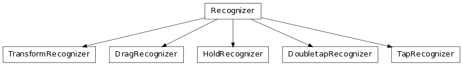
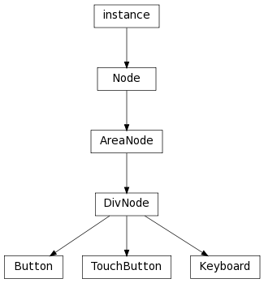
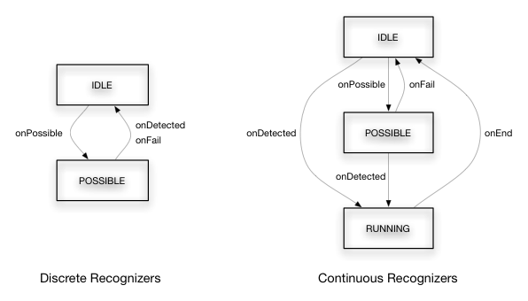

User Interface Classes
The namespace libavg.ui contains python modules that expose higher-level user interface
functionality


-
class libavg.ui.Button(upNode, downNode[, disabledNode=None, activeAreaNode=None, pressHandler=None, clickHandler=None, stateChangeHandler=None])
Bases: libavg.avg.DivNode
A generic button that shows different user-supplied nodes depending on it’s
state. Possible button states are up, down and disabled. The nodes are attached
as children to the Button on construction. For a simple button, image nodes can
be passed. Button behaviour corresponds to standard GUI buttons.
| Parameters: |
- upNode (avg.Node) – The node displayed when the button is not pressed.
- downNode (avg.Node) – The node displayed when the button is pressed.
- disabledNode (avg.Node) – The node displayed when the button is disabled.
- activeAreaNode (avg.Node) – A node that is used only to determine if a click is over the button. Usually,
this node is invisible. activeAreaNode is useful for small touch
buttons, where the active area should be larger than the visible button to
accout for touch inaccuracies.
|
|---|
Callbacks:
-
pressHandler(event)
Called when the button is pressed. This happens on a down event.
| Parameters: | event – The corresponding cursor down event. |
|---|
-
clickHandler(event)
Called when the button is clicked. A click is generated when an up event
happens inside the button.
-
stateChangeHandler(state)
Called whenever the button state changes.
-
delete()
-
getUpNode() → Node
-
getDownNode() → Node
-
getDisabledNode() → Node
-
setEnabled(isEnabled)
-
isEnabled()
-
class libavg.ui.DoubletapRecognizer(node[, eventSource=avg.TOUCH | avg.MOUSE, maxTime=MAX_DOUBLETAP_TIME, initialEvent=None, possibleHandler=None, failHandler=None, detectedHandler=None])
Bases: libavg.ui.gesture.Recognizer
A DoubletapRecognizer detects doubletaps: Two short touches in quick
succession without a large change of the cursor position.
| Parameters: | maxTime – The maximum time that each phase of the tap may take. |
|---|
-
class libavg.ui.DragRecognizer(eventNode[, coordSysNode=None, eventSource=avg.TOUCH | avg.MOUSE, initialEvent=None, direction=ANY_DIRECTION, directionTolerance=pi/4, friction=-1, possibleHandler=None, failHandler=None, detectedHandler=None, moveHandler=None, upHandler=None, endHandler=None])
Bases: libavg.ui.gesture.Recognizer
A DragRecognizer attaches itself to a node’s cursor events and
delivers higher-level callbacks that can be used to implement dragging or
drag-like functionality.
DragRecognizer supports inertia after the node is released.
| Parameters: |
- eventNode (avg.Node) – The node to attach to. The DragRecognizer registers an event
handler to react to any contacts for this node.
- coordSysNode (avg.Node) – Used to determine the coordinate system for the offsets returned by the
callbacks. If coordSysNode is not given, eventNode is
used as default. The DragRecognizer never modifies any nodes
itself. coordSysNode can be used to separate the node that
is the ‘handle’ for the events from the node that is being moved - for
instance, to allow moving a window by dragging the title bar.
- direction – Can be used to constrain the recognizer to VERTICAL or
HORIZONTAL drags only. If one of these constants is passed as
direction, the recognizer invokes onPossible()
when the down event arrives, then determines whether the drag is a
predominantly horizontal or vertical drag and invokes either
onDetected() or onFail() depending on the result.
- directionTolerance (float) – A tolerance angle in radians for the detection of horizontal and vertical
drags.
- friction (float) – If set, this parameter enables inertia processing. It describes how
quickly the drag comes to a stop after the cursor is released.
|
|---|
Callbacks:
-
moveHandler(event, offset)
Called when the drag should cause a position change. This usually happens
in response to a CURSORMOTION event, but may also happen
because of inertia.
| Parameters: |
- event – The corresponding cursor motion event. If there was no event,
this parameter is None.
- offset (avg.Point2D) – The current offset from the start of the drag in coordinates relative
to the coordSysNode‘s parent.
|
|---|
-
upHandler(event, offset)
Called when the cursor is released. If inertia is enabled, there may be
move events after the up event.
| Parameters: |
- event – The corresponding CURSORUP event.
- offset (avg.Point2D) – The current offset from the start of the drag in coordinates relative
to the coordSysNode‘s parent.
|
|---|
-
endHandler()
Called when movement stops. This is either directly after the up event
or when inertia has run its course.
-
abortInertia()
Causes inertia processing to end immediately.
-
class libavg.ui.HoldRecognizer(node[, eventSource=avg.TOUCH | avg.MOUSE, delay=HOLD_DELAY, initialEvent=None, possibleHandler=None, failHandler=None, detectedHandler=None, stopHandler=None])
Bases: libavg.ui.gesture.Recognizer
A HoldRecognizer detects if a touch is held for a certain amount of
time. Holds are continuous events: the stopHandler() is called when the
contact up event arrives.
| Parameters: | delay – The amount of time that has to pass before the hold is recognized. |
|---|
-
class libavg.ui.Keyboard(bgHref, ovlHref, keyDefs, shiftKeyCode[, altGrKeyCode, stickyShift])
Bases: libavg.avg.DivNode
Implements an onscreen keyboard that turns mouse clicks or touches into key
presses. The keyboard is completely configurable. Keyboard graphics are determined
by the two image files in bgHref and ovlHref. Keys can be defined as rectangles
anywhere on these images. Works for both single-touch and multitouch devices.
When a key is pressed, a callback function is invoked.
Needs offscreen rendering support on the machine.
| Parameters: |
- bgHref (string) – Filename of an image that contains the keyboard with unpressed keys.
- ovlHref (string) – Filename of an image that contains the keyboard with pressed keys.
- keyDefs (list) –
List of key definitions. Keys can be either character keys:
[(<keycode>, <shift keycode>, <altgr keycode>), <pos>, <size>]
or command keys:
[<keycode>, <pos>, <size>]
For character keys, the shift and altgr keycodes are optional. To define
entire rows of evenly-spaced keys, use makeRowKeyDefs().
- shiftKeyCode – One of the command keycodes. When the key with this code is pressed,
pressing other keys causes them to return the shifted keycode.
- altGrKeyCode – One of the command keycodes. When the key with this code is pressed,
pressing other keys causes them to return the altgr keycode.
- stickyShift (bool) – For single-touch devices, the shift key must stay in the pressed state
until the next normal key is pressed to have any effect. This is the
behaviour if stickyShift is True. If it is
False (the default), a
multitouch device is assumed and shift works like on a physical keyboard.
|
|---|
-
reset()
Resets any sticky keys (shift, altgr) to their default state.
-
setKeyHandler(self, downHandler[, upHandler])
Set callbacks to invoke on key press and -release. Handlers take three
paramters: (event, char, cmd)
| Parameters: |
- downHandler – Callable to invoke on key down event or None.
- upHandler – Callable to invoke on key up event or None.
|
|---|
-
classmethod makeRowKeyDefs(startPos, keySize, spacing, keyStr, shiftKeyStr[, altGrKeyStr])
Creates key definitions for a row of uniform keys. Useful for creating the
keyDefs parameter of the Keyboard constructor.
| Parameters: |
- startPos (avg.Point2D) – Top left position of the row.
- keySize (avg.Point2D) – Size of each key.
- spacing (int) – Number of empty pixels between two keys.
- keyStr (string) – Unicode string containing the unshifted keycodes (i.e.
u"qwertzuiopżś")
- shiftKeyStr (string) – Unicode string containing the shifted keycodes
(i.e. u"QWERTZUIOPńć")
- altGrKeyStr (string) – Unicode string containing the keycodes when altgr is pressed.
|
|---|
-
class libavg.ui.Recognizer(node, isContinuous, eventSource, maxContacts, initialEvent[, possibleHandler=None, failHandler=None, detectedHandler=None, endHandler=None])
Bases: object
Base class for gesture recognizers that attach to a node’s cursor events and
emit higher-level events. Gesture recognizers have a standard set of states and
callbacks, but derived classes may add their own callbacks and do not need to
invoke all base class callbacks. The possible states vary depending on the value
of isContinuous:

A usage example for the recognizers can be found under
src/samples/gestures.py.
| Parameters: |
- node (Node) – Node to attach to.
- isContinuous (bool) – True if the gesture stays active after it has been detected.
- eventSource – One of the standard event sources (TRACK, TOUCH
etc.).
- maxContacts – The maximum number of contacts that the recognizer should handle.
None if there is no maximum.
- initialEvent – A cursordown event to pass to the recognizer immediately.
|
|---|
Callbacks:
-
possibleHandler(event)
Called when gesture recognition begins - usually after a cursordown event.
Some continuous gestures (such as unconstrained drags) never invoke
possibleHandler() but call detectedHandler()
immediately.
-
failHandler(event)
Called when gesture recognition is aborted.
-
detectedHandler(event)
Called when the gesture is recognized. For discrete gestures, this
signifies the end of gesture processing.
-
endHandler(event)
Called when a continuous gesture ends.
-
enable(isEnabled)
Enables or disables the Recognizer.
-
getState() → String
Returns the state (“IDLE”, “POSSIBLE” or “RUNNING”) of the recognizer.
-
class libavg.ui.TapRecognizer(node[, eventSource=avg.TOUCH | avg.MOUSE, maxTime=MAX_TAP_TIME, initialEvent=None, possibleHandler=None, failHandler=None, detectedHandler=None])
Bases: libavg.ui.gesture.Recognizer
A TapRecognizer detects short touches without a large change of the
cursor position.
| Parameters: | maxTime – The maximum time that the tap may take in milliseconds. |
|---|
-
class libavg.ui.TouchButton(upNode, downNode, disabledNode=None, activeAreaNode=None, fatFingerEnlarge=False, clickHandler=None])
Bases: libavg.avg.DivNode
A button made specifically for touch input. Uses the TapRecognizer to
detect clicks.
| Parameters: |
- upNode (avg.Node) – The node displayed when the button is not pressed.
- downNode (avg.Node) – The node displayed when the button is pressed.
- disabledNode (avg.Node) – The node displayed when the button is disabled.
- activeAreaNode (avg.Node) – A node that is used only to determine if a click is over the button. Usually,
this node is invisible. activeAreaNode is useful for small touch
buttons, where the active area should be larger than the visible button to
account for touch inaccuracies.
- fatFingerEnlarge (bool) – If this parameter is set to True, the button generates it’s own
internal activeAreaNode that is at least 20x20mm large.
fatFingerEnlarge is incompatible with a custom
activeAreaNode.
|
|---|
Callbacks:
-
clickHandler(event)
Called when the button is clicked.
-
enabled
True if the button accepts input. If the button is disabled,
it shows the disabledNode.
-
classmethod fromSrc(upSrc, downSrc[, disabledSrc=None, **kwargs]) → Button
Factory method that creates a button from filenames of the images to be
displayed for different states.
-
class libavg.ui.Transform(trans[, rot=0, scale=1, pivot=(0, 0)])
Encapsulates a coordinate transformation and can be used to change the position,
rotation and scale of a node.
-
pivot
The point around which rot and scale are applied.
-
rot
Rotation in radians.
-
scale
Multiplies the size of the node.
-
trans
The translation.
-
moveNode(node)
Changes a node‘s pos, angle and size by applying the transform.
-
class libavg.ui.TransformRecognizer(eventNode[, coordSysNode=None, eventSource=avg.TOUCH | avg.MOUSE, initialEvent=None, friction=-1, detectedHandler=None, moveHandler=None, upHandler=None, endHandler=None])
Bases: libavg.ui.gesture.Recognizer
A TransformRecognizer is used to support drag/zoom/rotate
functionality. From any number of touches on a node, it calculates an aggregate
transform that can be used to change the position, size and angle of a node.
The class supports intertia after the node is released.
| Parameters: |
- eventNode (avg.Node) – The node to attach to. The TransformRecognizer registers an event
handler to react to any contacts for this node.
- coordSysNode (avg.Node) – Used to determine the coordinate system for the transforms returned by the
callbacks. If coordSysNode is not given, eventNode is
used as default. The TransformRecognizer never modifies any nodes
itself. coordSysNode can be used to separate the node that
is the ‘handle’ for the events from the node that is being moved - for
instance, to allow moving and rotating a window by dragging the title bar.
- friction (float) – If set, this parameter enables inertia processing. It describes how
quickly the transform comes to a stop after the cursor is released.
|
|---|
Callbacks:
-
moveHandler(transform)
Called whenever the transform changes.
| Parameters: | transform (Transform) – The change in transformation since the last call of move or up. |
|---|
-
upHandler(transform)
Called when the last touch is released.
| Parameters: | transform – The change in transformation since the last call of move. |
|---|
-
endHandler()
Called when movement stops. This is either directly after the up event
or when inertia has run its course.